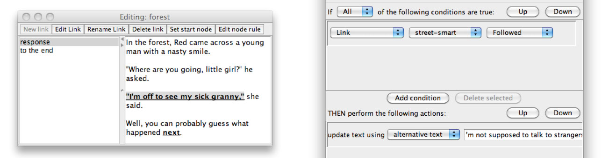

Conditional text
Link rules can contain Update text actions. This allows text within a node to change procedurally based on conditions.
When an Update text action is added to a rule, you can choose from three types of Update text action: using alternative text, text fact or number fact. If you choose to update text using alternative text, you can type some text into the text entry field in the action. If you choose to update using either a text fact or a number fact, you can choose a fact from the pulldown menu.

When a node is entered, any link rules which contain Update text actions will have their conditions evaluated. If the conditions are satisfied, only the Update text actions on that rule will be executed, and the text where the link is attached will be replaced with either the alternative text which you entered, or the value of the fact, depending on the type of action you have chosen.
One thing to watch out for is the order in which rules are evaluated when a node is entered. As described in the Node Rules section, when a node is entered, the node rules are evaluated first. This is followed by any link rules containing Update text actions. Any changes to facts caused by actions in a node rule may impact what text is updated when the link rules on the node are evaluated.